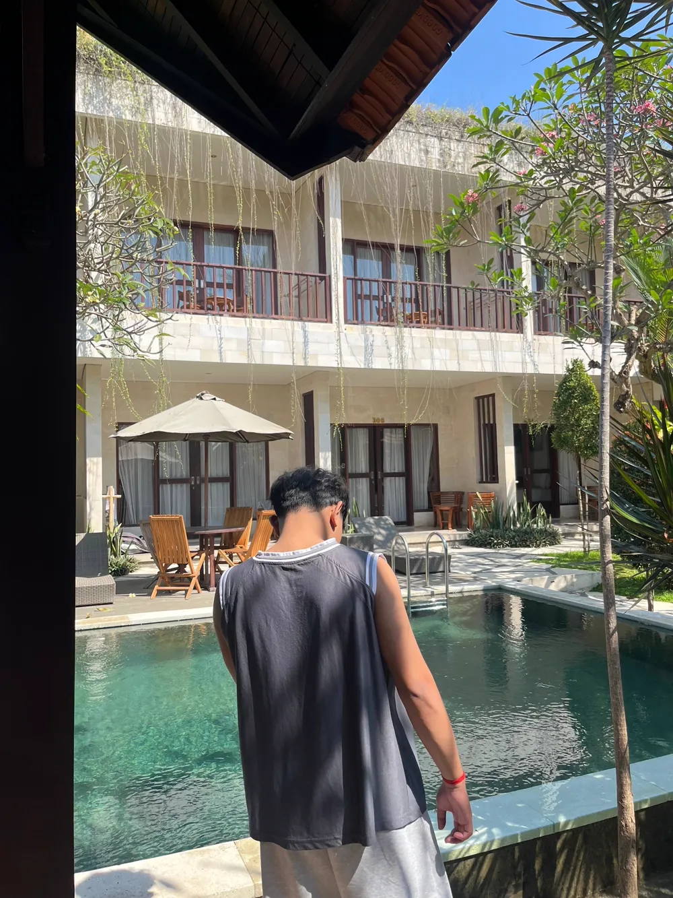

Available for projects
•
Bali, Indonesia
Crafting Digital Experiences.
Halo, saya Made Premadharma Yogananda. Mahasiswa Ilmu Komputer berfokus pada integrasi antarmuka modern yang estetik, sistematis, dan keandalan infrastruktur web.
6+
Karya & Proyek
Undiksha
Ilmu Komputer
DevOps
& UI/UX Focus

Made Premadharma
CS Undergrad • Developer